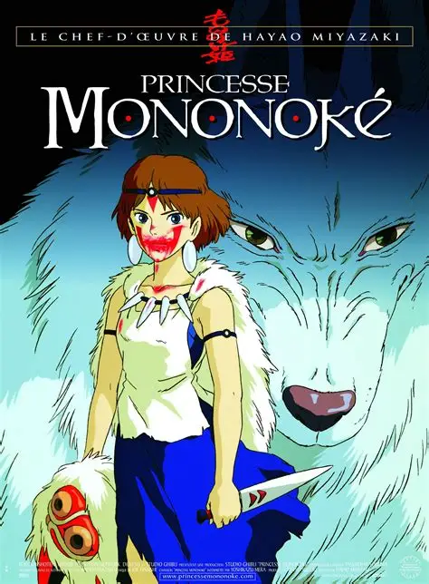

"Princesa Mononoke" (1997), do Studio Ghibli, é um épico ambientalista ambientado no Japão Muromachi. Ashitaka, um príncipe amaldiçoado por um deus javali, viaja para o oeste em busca de cura e se envolve em um conflito entre a Cidade do Ferro, liderada por Lady Eboshi, e os deuses da floresta, defendidos por San, uma jovem humana criada por lobos.
alugar